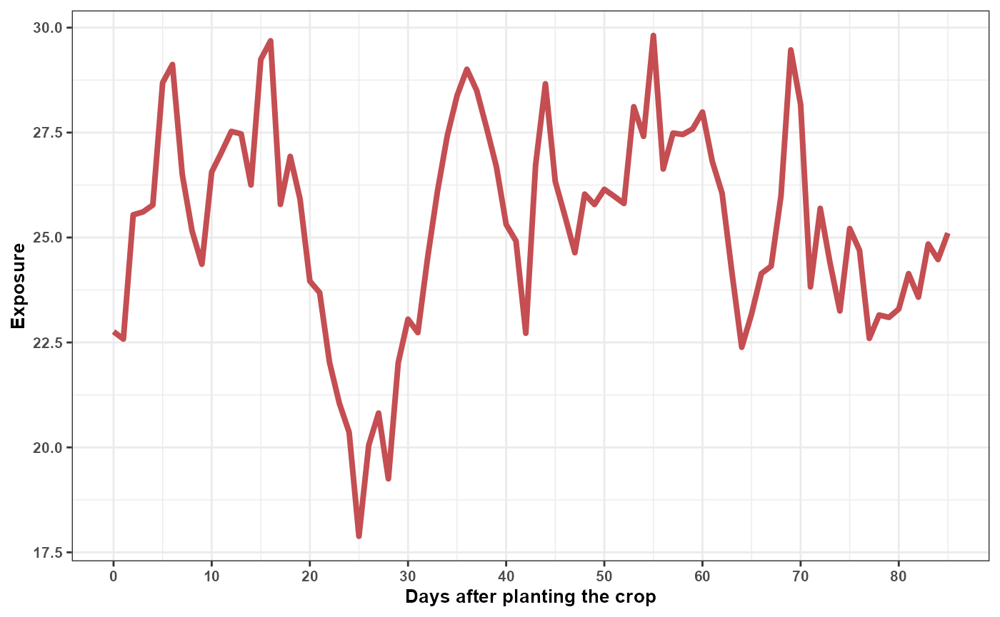
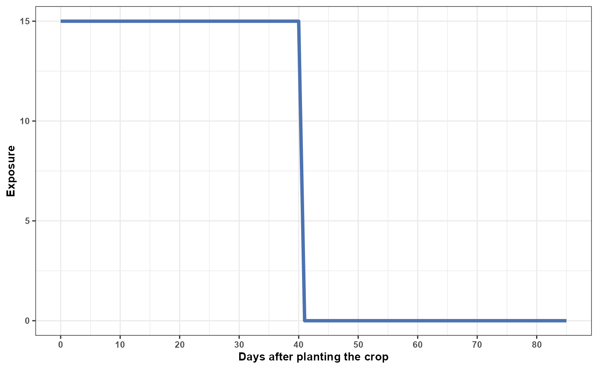
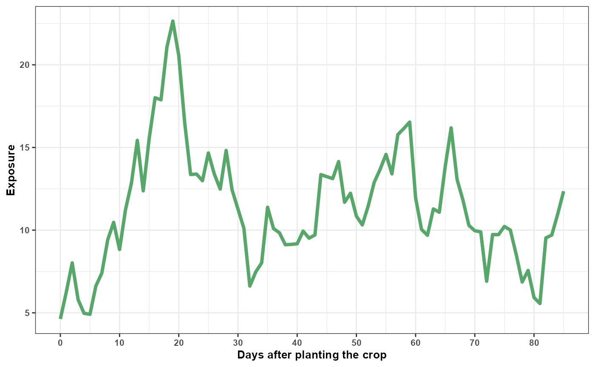
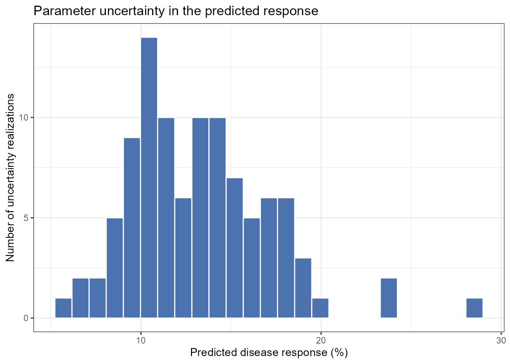
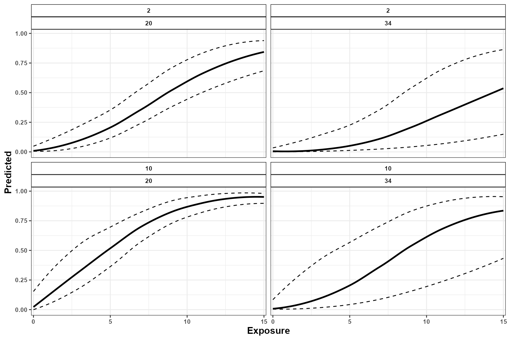
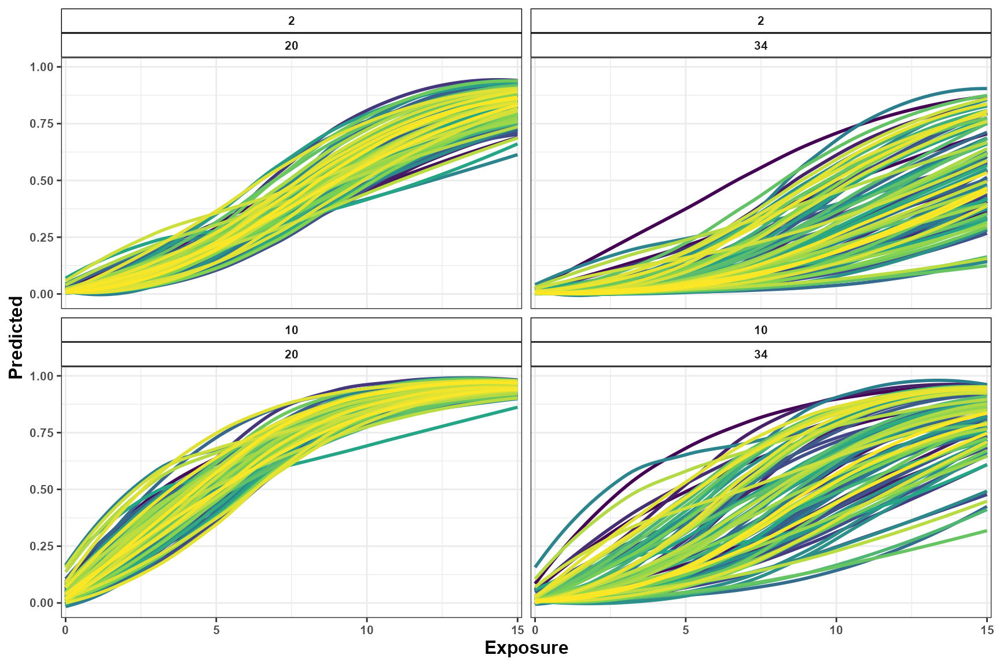
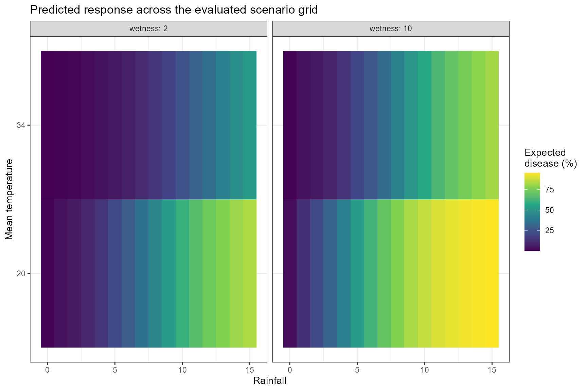
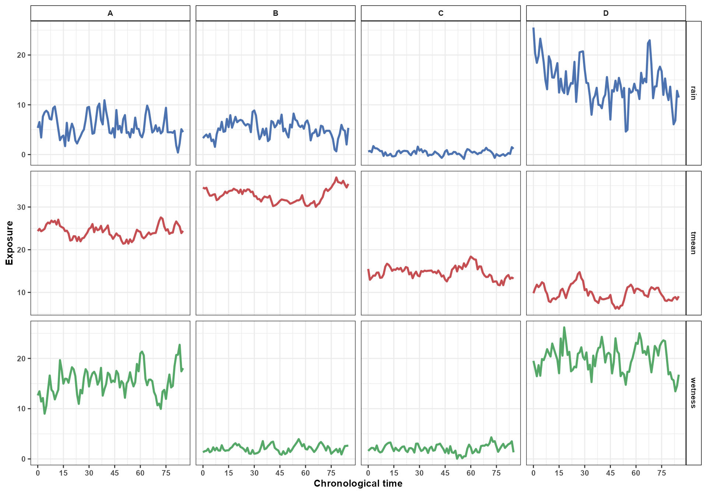
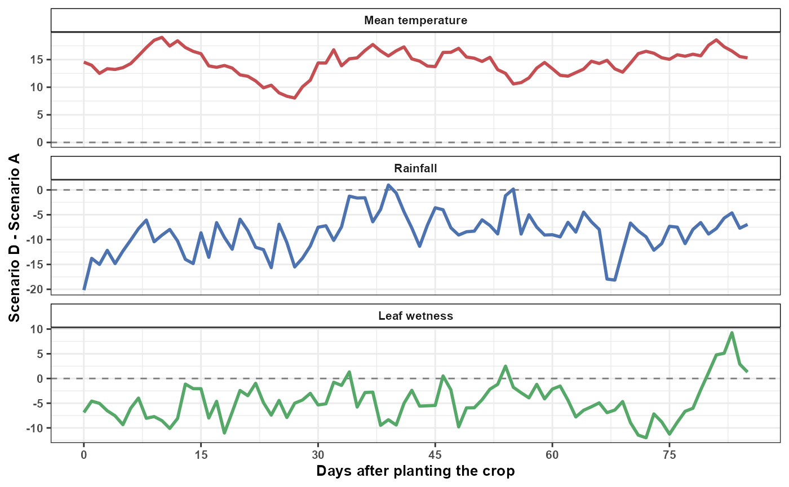
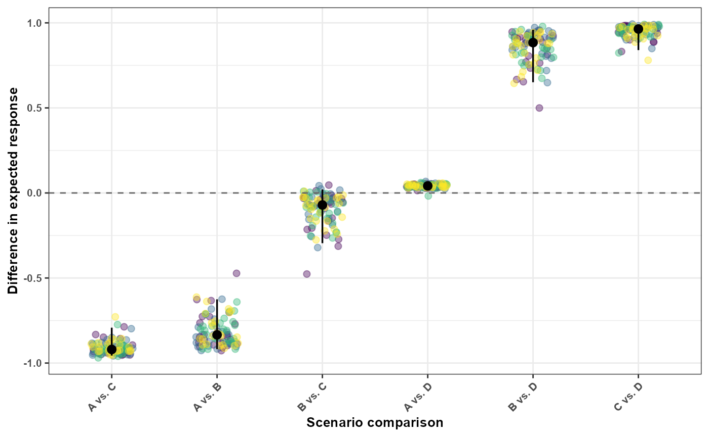

Simulation and Prediction
Ricardo G. Tomáz
Source:vignettes/simulation-prediction.Rmd
simulation-prediction.RmdIntroduction
Understanding historical exposure-lag associations is important for epidemiological interpretation, but researchers are often interested in a different question:
What is the expected disease outcome under an alternative environmental history?
EpiExposure provides simulation and prediction tools
that allow researchers to:
- generate complete synthetic exposure histories;
- introduce structured exposure events;
- construct hypothetical epidemiological scenarios;
- predict expected disease outcomes;
- propagate parameter uncertainty;
- compare alternative exposure profiles and their predictions.
Unlike lag-specific effect summaries, prediction evaluates all exposure values and lags jointly. Therefore, every prediction represents a complete environmental history rather than an isolated exposure value.
What you will learn. This tutorial shows how to simulate complete exposure histories, predict expected disease outcomes, propagate parameter uncertainty, construct scenario grids, and compare alternative environmental conditions.
The outputs describe predictions and contrasts under the fitted statistical model. Hypothetical scenarios should not automatically be interpreted as causal interventions unless the study design and assumptions support that interpretation.
Preparing the example model
This section uses the same dataset and DLNM specification introduced in the previous tutorials.
data("epi_data")Define the exposure-lag structures:
cb <- define_exposures(
data = epi_data,
vars = c(
"tmean",
"rain",
"wetness"
),
max_lag = 85,
df_var = 3,
df_lag = 2
)Build the epidemic-level design:
dat <- build_design(
data = epi_data,
cb_templates = cb
)Prepare the response:
dat <- prepare_response(
data = dat,
response = "y",
family = "beta"
)Fit the model:
fit <- fit_epidlnm(
data = dat,
model_engine = "glmmTMB",
family = "beta",
random_effect = NULL,
epiexposure_spec = attr(
cb,
"spec"
)
)The fitted model relates complete histories of temperature, rainfall, and leaf wetness to the expected disease response.
Complete exposure histories
Each exposure profile supplied to predict_outcomes()
must contain exactly max_lag + 1 observations. With
max_lag = 85, each profile therefore contains 86
values.
Profiles are supplied in chronological order, from the earliest exposure observation to the most recent:
- the first value (
time = 0) is the oldest observation and corresponds to lag 85; - the final value (
time = 85) is the most recent observation and corresponds to lag 0.
More generally, chronological time and retrospective lag are related by:
Profile construction and visualization use chronological time, whereas DLNM effects are interpreted on the retrospective lag scale. Thus, chronological time increases from the oldest to the most recent observation, while retrospective lag increases in the opposite direction, from the most recent to progressively older observations.
simulate_exposures() generates profiles directly in
chronological order and does not reverse them. Simulated or manually
defined profiles should therefore be supplied to
predict_outcomes() in the same order in which they were
created. Users should not reverse the profiles manually.
Complete profiles are required. Temperature, rainfall, and leaf wetness profiles must have the same length and temporal interpretation used to fit the model. Coordinates, blocks, years, and other grouping variables are not exposure profiles.
Simulating exposure histories
Why simulate exposures?
Environmental conditions rarely occur as isolated observations. Disease development can reflect sequences of temperature, rainfall, leaf wetness, and other exposures occurring throughout the epidemic.
simulate_exposures() generates complete chronological
profiles that can be used in prediction and scenario analysis.
A simulated exposure profile is not a disease prediction. It becomes
a prediction scenario only after it is combined with the other required
exposures and supplied to predict_outcomes().
Simulating a background process
The following example generates a temperature profile using an autoregressive background process:
temperature_profile <- simulate_exposures(
max_lag = 85,
mode = "profile",
seed = 123,
background = list(
dist = "ar1",
mean = 25,
sd = 4,
phi = 0.90
)
)The result contains the simulated chronological profile:
#> time_0 time_1 time_2 time_3 time_4 time_5 time_6 time_7
#> 22.75810 22.58096 25.54056 25.60944 25.77392 28.68685 29.12180 26.50391
#> time_8 time_9 time_10 time_11 time_12 time_13 time_14 time_15
#> 25.15595 24.36331 26.56124 27.03248 27.52800 27.46818 26.25222 29.24259
#> time_16 time_17 time_18 time_19 time_20 time_21 time_22 time_23
#> 29.68636 25.78881 26.93278 25.91517 23.96184 23.68560 22.02814 21.05446
#> time_24 time_25 time_26 time_27 time_28 time_29 time_30 time_31
#> 20.35922 17.88245 20.05494 20.81686 19.25076 22.01179 23.05417 22.73428
#> time_32 time_33 time_34 time_35 time_36 time_37 time_38 time_39
#> 24.52156 26.10048 27.42291 28.38130 29.00896 28.50012 27.61664 26.69160
#> time_40 time_41 time_42 time_43 time_44 time_45 time_46 time_47
#> 25.31118 24.91755 22.71950 26.72925 28.66248 26.33803 25.50177 24.63795
#> time_48 time_49 time_50 time_51 time_52 time_53 time_54 time_55
#> 26.03407 25.78531 26.14845 25.98383 25.81070 28.11587 27.41064 29.81363
#> time_56 time_57 time_58 time_59 time_60 time_61 time_62 time_63
#> 26.63193 27.48804 27.45519 27.58617 27.98948 26.81470 26.05226 24.17109
#> time_64 time_65 time_66 time_67 time_68 time_69 time_70 time_71
#> 22.38525 23.17595 24.13983 24.31826 25.99447 29.46946 28.16638 23.82356
#> time_72 time_73 time_74 time_75 time_76 time_77 time_78 time_79
#> 25.69477 24.38876 23.25030 25.21342 24.69556 22.59761 23.15396 23.09640
#> time_80 time_81 time_82 time_83 time_84 time_85
#> 23.29681 24.13889 23.57873 24.84437 24.47550 25.10643The profile is ordered from the oldest to the most recent exposure
observation. For this 86-value history, the first value corresponds to
lag 85 and the final value corresponds to lag 0. The profile remains in
chronological order when it is later supplied to
predict_outcomes().
Visualize the complete profile:
df_tmean <- data.frame(
time = 0:85,
value = as.numeric(temperature_profile$profile)
)
df_tmean%>%
ggplot(aes(time,value))+
geom_line(color = "#C44E52", size = 1.4)+
theme_bw()+
labs(x = "Days after planting the crop",
y = "Exposure")+
scale_x_continuous(
limits = c(0, 85),
breaks = seq(0, 85, by = 10)
)+
theme(text = element_text(size = 10, face = "bold"))
The autoregressive parameter:
phi = 0.90produces temporal dependence among consecutive observations. It does not represent an exposure-lag effect. The lag-response relationship remains determined by the fitted DLNM.
Simulating structured exposure events
A structured event can be superimposed on a background profile.
The following example constructs a rainfall pattern with values assigned to selected portions of the temporal history:
rain_profile <- simulate_exposures(
max_lag = 85,
mode = "pattern",
pattern = "block_times",
block_times = c(
0,
40
),
fixed_value = 15,
background = list(
dist = "fixed",
value = 0
)
)#> time_0 time_1 time_2 time_3 time_4 time_5 time_6 time_7 time_8 time_9
#> 15 15 15 15 15 15 15 15 15 15
#> time_10 time_11 time_12 time_13 time_14 time_15 time_16 time_17 time_18 time_19
#> 15 15 15 15 15 15 15 15 15 15
#> time_20 time_21 time_22 time_23 time_24 time_25 time_26 time_27 time_28 time_29
#> 15 15 15 15 15 15 15 15 15 15
#> time_30 time_31 time_32 time_33 time_34 time_35 time_36 time_37 time_38 time_39
#> 15 15 15 15 15 15 15 15 15 15
#> time_40 time_41 time_42 time_43 time_44 time_45 time_46 time_47 time_48 time_49
#> 15 0 0 0 0 0 0 0 0 0
#> time_50 time_51 time_52 time_53 time_54 time_55 time_56 time_57 time_58 time_59
#> 0 0 0 0 0 0 0 0 0 0
#> time_60 time_61 time_62 time_63 time_64 time_65 time_66 time_67 time_68 time_69
#> 0 0 0 0 0 0 0 0 0 0
#> time_70 time_71 time_72 time_73 time_74 time_75 time_76 time_77 time_78 time_79
#> 0 0 0 0 0 0 0 0 0 0
#> time_80 time_81 time_82 time_83 time_84 time_85
#> 0 0 0 0 0 0Visualize the rainfall profile:
df_rain <- data.frame(
time = 0:85,
value = as.numeric(rain_profile$profile)
)
df_rain%>%
ggplot(aes(time,value))+
geom_line(color = "#4C72B0", size = 1.4)+
theme_bw()+
labs(x = "Days after planting the crop",
y = "Exposure")+
scale_x_continuous(
limits = c(0, 85),
breaks = seq(0, 85, by = 10)
)+
theme(text = element_text(size = 10, face = "bold"))
A leaf wetness profile can be generated independently:
wetness_profile <- simulate_exposures(
max_lag = 85,
mode = "profile",
seed = 456,
background = list(
dist = "ar1",
mean = 10,
sd = 4,
phi = 0.90
)
)#> time_0 time_1 time_2 time_3 time_4 time_5 time_6 time_7
#> 4.625914 6.247426 8.019056 5.795534 4.970456 4.908391 6.621729 7.396401
#> time_8 time_9 time_10 time_11 time_12 time_13 time_14 time_15
#> 9.413140 10.471295 8.827395 11.230632 12.831472 15.432048 12.376714 15.534374
#> time_16 time_17 time_18 time_19 time_20 time_21 time_22 time_23
#> 18.009388 17.884050 21.071020 22.645309 20.553278 16.503720 13.365585 13.392098
#> time_24 time_25 time_26 time_27 time_28 time_29 time_30 time_31
#> 12.990405 14.669058 13.395137 12.483066 14.823142 12.441433 11.275305 10.112462
#> time_32 time_33 time_34 time_35 time_36 time_37 time_38 time_39
#> 6.615987 7.470749 8.021169 11.384750 10.094474 9.840489 9.117208 9.137949
#> time_40 time_41 time_42 time_43 time_44 time_45 time_46 time_47
#> 9.173692 9.941607 9.512229 9.706507 13.360498 13.235160 13.117645 14.148516
#> time_48 time_49 time_50 time_51 time_52 time_53 time_54 time_55
#> 11.684280 12.229035 10.846750 10.314809 11.466825 12.883845 13.673602 14.581575
#> time_56 time_57 time_58 time_59 time_60 time_61 time_62 time_63
#> 13.403023 15.778860 16.145459 16.537209 11.952268 10.044761 9.690582 11.283632
#> time_64 time_65 time_66 time_67 time_68 time_69 time_70 time_71
#> 11.079345 13.843590 16.184937 13.070750 11.814142 10.288002 9.962817 9.895465
#> time_72 time_73 time_74 time_75 time_76 time_77 time_78 time_79
#> 6.906054 9.733334 9.725104 10.223759 10.004476 8.513481 6.859744 7.560886
#> time_80 time_81 time_82 time_83 time_84 time_85
#> 5.922656 5.560829 9.527843 9.702088 10.967745 12.353884
df_wetness <- data.frame(
time = 0:85,
value = as.numeric(wetness_profile$profile)
)
df_wetness%>%
ggplot(aes(time,value))+
geom_line(color = "#55A868", size = 1.4)+
theme_bw()+
labs(x = "Days after planting the crop",
y = "Exposure")+
scale_x_continuous(
limits = c(0, 85),
breaks = seq(0, 85, by = 10)
)+
theme(text = element_text(size = 10, face = "bold"))
The three profiles can now be combined into one complete hypothetical environmental history.All three profiles follow the same chronological convention and contain 86 observations. At each chronological position, the temperature, rainfall, and leaf wetness values describe the environmental conditions assigned to that point in the hypothetical history.
When these profiles are supplied to predict_outcomes(),
the function validates their length and order and projects each complete
history through the cross-basis definition stored in the fitted model.
The resulting design follows the retrospective DLNM lag convention, in
which lag 0 represents the most recent exposure and increasing lags
represent progressively older exposures.
This internal transformation does not require the user to reverse or otherwise rearrange the simulated profiles.
Predicting disease outcomes
Deterministic prediction
predict_outcomes() receives the complete profiles in
chronological order and projects them through the cross-basis definition
stored in the fitted model. The reconstructed cross-basis predictors
represent the exposure histories on the retrospective DLNM lag scale,
allowing the function to calculate the population-level expected
response associated with the complete multivariable history.
prediction <- predict_outcomes(
fit = fit,
profiles = list(
tmean = temperature_profile$profile,
rain = rain_profile$profile,
wetness = wetness_profile$profile
),
uncertainty = FALSE
)
prediction
#> prediction
#> 1 0.1195241The prediction combines:
- the complete chronological temperature history;
- the complete chronological rainfall history;
- the complete chronological leaf wetness history;
- the corresponding retrospective lag contributions reconstructed from the fitted cross-basis;
- the fitted joint cross-basis coefficients;
- the inverse link required by the response family.
The output represents one joint prediction for the three complete exposure histories. It is not calculated independently for each day or lag.
The prediction is not a newly simulated disease observation. It represents the central expected response associated with the complete exposure history.
For the fitted Beta model, the result is an expected response on the proportion scale.
Prediction uncertainty
A deterministic prediction uses the central fitted coefficient estimates. However, the coefficients are estimated with uncertainty.
When:
uncertainty = TRUEEpiExposure propagates joint coefficient uncertainty
through the complete prediction calculation.
To inspect individual uncertainty realizations, request sample-level output:
prediction_samples <- predict_outcomes(
fit = fit,
profiles = list(
tmean = temperature_profile$profile,
rain = rain_profile$profile,
wetness = wetness_profile$profile
),
uncertainty = TRUE,
n_samples = 100,
output = "samples",
seed = 123
)
head(prediction_samples)
#> sample prediction
#> 1 1 0.1034903
#> 2 2 0.1042327
#> 3 3 0.0892574
#> 4 4 0.1337358
#> 5 5 0.0837315
#> 6 6 0.1593514Inspect the first realizations:
| sample | prediction |
|---|---|
| 1 | 0.1035 |
| 2 | 0.1042 |
| 3 | 0.0893 |
| 4 | 0.1337 |
| 5 | 0.0837 |
| 6 | 0.1594 |
| 7 | 0.1302 |
| 8 | 0.2368 |
| 9 | 0.1578 |
| 10 | 0.1566 |
Visualize the prediction distribution:
ggplot(
prediction_samples,
aes(
x = prediction * 100
)
) +
geom_histogram(
bins = 25,
fill = "#4C72B0",
color = "white"
) +
theme_bw() +
labs(
x = "Predicted disease response (%)",
y = "Number of uncertainty realizations",
title = "Parameter uncertainty in the predicted response"
)
This distribution represents parameter uncertainty in the expected response. It does not include observation-level noise and should not be interpreted as a distribution of newly simulated disease observations.
A summarized prediction can also be requested when individual realizations are not needed:
prediction_summary <- predict_outcomes(
fit = fit,
profiles = list(
tmean = temperature_profile$profile,
rain = rain_profile$profile,
wetness = wetness_profile$profile
),
uncertainty = TRUE,
n_samples = 100,
output = "summary",
seed = 123
)
prediction_summary
#> prediction prediction_sd prediction_lower prediction_upper
#> 1 0.1293006 0.03879026 0.07271773 0.2212469Scenario simulation
Why construct scenarios?
A single profile describes one complete hypothetical history. Scenario analysis extends this idea by evaluating multiple combinations of environmental conditions systematically.
Possible questions include:
- How does the predicted response change across rainfall levels?
- Does the rainfall association differ under distinct temperature conditions?
- Which combinations of temperature and leaf wetness yield larger expected responses?
- How does the timing of an exposure pattern alter the prediction?
These are model-based comparisons. They describe how the fitted model responds to supplied histories and do not automatically demonstrate causal interventions.
Defining epidemiological periods
The scenario grid can be organized using epidemiological periods:
periods <- define_periods(
max_lag = 85,
cuts = c(
20,
40,
60
),
prefix = "Period"
)
periods
#> period lag_start lag_end
#> 1 Period1 0 20
#> 2 Period2 21 40
#> 3 Period3 41 60
#> 4 Period4 61 85The resulting periods divide the retrospective lag interval into four subintervals.
Remember that lag order is retrospective:
smaller lag → closer to disease assessment
larger lag → earlier exposure conditionGenerating candidate scenarios
The following example varies rainfall across a grid while evaluating selected temperature and leaf wetness conditions:
scenarios <- simulate_ranges(
periods = periods,
vary = list(
tmean = c(
20,
34
),
rain = seq(
0,
15,
by = 1
),
wetness = c(
2,
10
)
),
scenario_type = "grid",
scenario_var = "rain"
)Predicting scenario outcomes
simulate_scenarios() evaluates the expected disease
outcome associated with each complete exposure scenario. When
uncertainty = TRUE, uncertainty in the joint fitted model
parameters is propagated through the prediction calculation.
Summarizing scenario predictions
With:
output = "summary"the parameter-draw predictions are summarized for each scenario. The
prediction column contains the median expected response
across the parameter draws, while prediction_lower and
prediction_upper contain the empirical uncertainty interval
defined by the selected probabilities. The default probabilities
correspond to a 95% interval.
pred_scenarios <- simulate_scenarios(
fit = fit,
scenarios = scenarios,
data = epi_data,
uncertainty = TRUE,
output = "summary",
n_samples = 100,
seed = 123
)Inspect the summarized predictions:
| scenario | scenario_point | tmean | rain | wetness | prediction | prediction_sd | prediction_lower | prediction_upper |
|---|---|---|---|---|---|---|---|---|
| RAIN_s1 | 1 | 20 | 0 | 2 | 0.0066 | 0.0022 | 0.0039 | 0.0119 |
| RAIN_s2 | 1 | 34 | 0 | 2 | 0.0015 | 0.0018 | 0.0003 | 0.0063 |
| RAIN_s3 | 1 | 20 | 1 | 2 | 0.0326 | 0.0339 | 0.0107 | 0.1403 |
| RAIN_s4 | 1 | 34 | 1 | 2 | 0.0067 | 0.0226 | 0.0016 | 0.0880 |
| RAIN_s5 | 1 | 20 | 2 | 2 | 0.0591 | 0.0432 | 0.0211 | 0.1866 |
| RAIN_s6 | 1 | 34 | 2 | 2 | 0.0117 | 0.0318 | 0.0031 | 0.1212 |
| RAIN_s7 | 1 | 20 | 3 | 2 | 0.0943 | 0.0472 | 0.0398 | 0.2148 |
| RAIN_s8 | 1 | 34 | 3 | 2 | 0.0206 | 0.0396 | 0.0052 | 0.1504 |
| RAIN_s9 | 1 | 20 | 4 | 2 | 0.1443 | 0.0514 | 0.0696 | 0.2589 |
| RAIN_s10 | 1 | 34 | 4 | 2 | 0.0314 | 0.0499 | 0.0088 | 0.1844 |
Visualizing summarized scenario predictions
The modeled rainfall association can be displayed across the selected
combinations of temperature and leaf wetness. For summary output,
plot_scenarios() displays the central predicted response
together with the corresponding lower and upper uncertainty limits.
plot_scenarios(
data = pred_scenarios,
x = "rain",
facet = c(
"wetness",
"tmean"
),
x_limits = c(
0,
15
),
output = "summary"
)
The central curve represents the median expected response for each scenario, whereas the lower and upper curves describe uncertainty arising from the fitted model parameters.
Returning individual prediction samples
With:
output = "samples"simulate_scenarios() returns every draw-specific
prediction instead of summarizing the draws. Each row represents one
parameter draw for one scenario in the exposure grid.
These samples are not additional exposure simulations and are not newly simulated disease observations. The exposure scenarios remain fixed; what changes across samples is the joint draw of the fitted model parameters used to calculate the expected response.
Draw-level output is useful for constructing customized uncertainty summaries, examining the complete distribution of expected responses, propagating parameter uncertainty into downstream calculations, or creating custom visualizations.
pred_scenarios_s <- simulate_scenarios(
fit = fit,
scenarios = scenarios,
data = epi_data,
uncertainty = TRUE,
output = "samples",
n_samples = 100,
seed = 123
)Inspect the first draw-specific predictions:
| scenario | scenario_point | tmean | rain | wetness | sample | prediction |
|---|---|---|---|---|---|---|
| RAIN_s1 | 1 | 20 | 0 | 2 | 1 | 0.0067 |
| RAIN_s1 | 1 | 20 | 0 | 2 | 2 | 0.0070 |
| RAIN_s1 | 1 | 20 | 0 | 2 | 3 | 0.0099 |
| RAIN_s1 | 1 | 20 | 0 | 2 | 4 | 0.0062 |
| RAIN_s1 | 1 | 20 | 0 | 2 | 5 | 0.0056 |
| RAIN_s1 | 1 | 20 | 0 | 2 | 6 | 0.0120 |
| RAIN_s1 | 1 | 20 | 0 | 2 | 7 | 0.0050 |
| RAIN_s1 | 1 | 20 | 0 | 2 | 8 | 0.0050 |
| RAIN_s1 | 1 | 20 | 0 | 2 | 9 | 0.0046 |
| RAIN_s1 | 1 | 20 | 0 | 2 | 10 | 0.0047 |
Visualizing individual prediction samples
When draw-level output is supplied, plot_scenarios()
displays the prediction curves associated with the individual parameter
draws. The collection of curves shows how uncertainty in the fitted
parameters propagates across the complete scenario grid.
plot_scenarios(
data = pred_scenarios_s,
x = "rain",
facet = c(
"wetness",
"tmean"
),
x_limits = c(
0,
15
),
output = "samples"
)
The summary and sample outputs describe the same parameter-uncertainty distribution at different levels of detail:
-
output = "summary"reports the median expected response and its empirical uncertainty interval for each scenario; -
output = "samples"retains every draw-specific expected response used to construct those summaries.
The figures should be interpreted as visualizations of the fitted model over the scenario grid. Predictions outside or near the limits of the observed exposure support should be treated cautiously. Neither output includes observation-level noise, and neither should be interpreted as a distribution of newly simulated disease observations.
Scenario surfaces
When enough values are evaluated along two continuous dimensions, predictions can be presented as a scenario surface.
The current example evaluates only two temperature values. Therefore, a line or point representation is more appropriate than a dense continuous surface.
A tile display can still summarize the evaluated grid:
ggplot(
pred_scenarios,
aes(
x = rain,
y = factor(
tmean
),
fill = prediction * 100
)
) +
geom_tile() +
facet_wrap(
vars(
wetness
),
labeller = label_both
) +
scale_fill_viridis_c(
name = "Expected\ndisease (%)"
) +
theme_bw() +
labs(
x = "Rainfall",
y = "Mean temperature",
title = "Predicted response across the evaluated scenario grid"
)
A smoother surface requires a denser sequence of temperature values
in simulate_ranges().
Comparing predictions
Comparing complete simulated histories
A single prediction describes the expected response associated with
one complete environmental history. compare_predictions()
extends this analysis by contrasting the expected responses associated
with two or more complete histories.
The following example constructs four hypothetical environmental scenarios. Each scenario contains chronological temperature, rainfall, and leaf wetness profiles generated with autoregressive background processes.
The scenarios differ in their mean exposure values, temporal variability, and persistence:
- Scenario A: moderate temperature and rainfall with prolonged leaf wetness;
- Scenario B: high temperature, moderate rainfall, and low leaf wetness;
- Scenario C: cool and relatively dry conditions with low leaf wetness;
- Scenario D: cooler conditions with high rainfall and prolonged leaf wetness.
Because several exposures differ simultaneously, the resulting prediction contrasts represent joint differences between the complete environmental histories. They should not be attributed to one exposure individually.
Defining Scenario A
exposure_tmean_A <- simulate_exposures(
max_lag = 85,
mode = "profile",
seed = 101,
background = list(
dist = "ar1",
mean = 25,
sd = 2,
phi = 0.90
),
n = 1
)
exposure_rain_A <- simulate_exposures(
max_lag = 85,
mode = "profile",
seed = 102,
background = list(
dist = "ar1",
mean = 5,
sd = 2,
phi = 0.50
),
n = 1
)
exposure_wetness_A <- simulate_exposures(
max_lag = 85,
mode = "profile",
seed = 103,
background = list(
dist = "ar1",
mean = 15,
sd = 3,
phi = 0.70
),
n = 1
)
scenario_A <- list(
tmean = exposure_tmean_A,
rain = exposure_rain_A,
wetness = exposure_wetness_A
)Defining Scenario B
exposure_tmean_B <- simulate_exposures(
max_lag = 85,
mode = "profile",
seed = 201,
background = list(
dist = "ar1",
mean = 34,
sd = 2,
phi = 0.95
),
n = 1
)
exposure_rain_B <- simulate_exposures(
max_lag = 85,
mode = "profile",
seed = 202,
background = list(
dist = "ar1",
mean = 5,
sd = 1.5,
phi = 0.40
),
n = 1
)
exposure_wetness_B <- simulate_exposures(
max_lag = 85,
mode = "profile",
seed = 203,
background = list(
dist = "ar1",
mean = 2,
sd = 0.7,
phi = 0.60
),
n = 1
)
scenario_B <- list(
tmean = exposure_tmean_B,
rain = exposure_rain_B,
wetness = exposure_wetness_B
)Defining Scenario C
exposure_tmean_C <- simulate_exposures(
max_lag = 85,
mode = "profile",
seed = 301,
background = list(
dist = "ar1",
mean = 15,
sd = 2,
phi = 0.90
),
n = 1
)
exposure_rain_C <- simulate_exposures(
max_lag = 85,
mode = "profile",
seed = 302,
background = list(
dist = "ar1",
mean = 0.5,
sd = 0.5,
phi = 0.40
),
n = 1
)
exposure_wetness_C <- simulate_exposures(
max_lag = 85,
mode = "profile",
seed = 303,
background = list(
dist = "ar1",
mean = 2,
sd = 0.8,
phi = 0.60
),
n = 1
)
scenario_C <- list(
tmean = exposure_tmean_C,
rain = exposure_rain_C,
wetness = exposure_wetness_C
)Defining Scenario D
exposure_tmean_D <- simulate_exposures(
max_lag = 85,
mode = "profile",
seed = 401,
background = list(
dist = "ar1",
mean = 10,
sd = 2,
phi = 0.90
),
n = 1
)
exposure_rain_D <- simulate_exposures(
max_lag = 85,
mode = "profile",
seed = 402,
background = list(
dist = "ar1",
mean = 15,
sd = 4,
phi = 0.60
),
n = 1
)
exposure_wetness_D <- simulate_exposures(
max_lag = 85,
mode = "profile",
seed = 403,
background = list(
dist = "ar1",
mean = 20,
sd = 3,
phi = 0.70
),
n = 1
)
scenario_D <- list(
tmean = exposure_tmean_D,
rain = exposure_rain_D,
wetness = exposure_wetness_D
)All profiles contain 86 observations and are ordered chronologically
from the oldest to the most recent exposure. The profiles should not be
reversed before being supplied to
compare_predictions().
Visualizing the candidate histories
Before comparing their predicted outcomes, the complete exposure profiles can be inspected to verify how the scenarios differ.
The following helper converts one simulated exposure profile into a data frame:
profile_to_data <- function(
exposure,
variable,
scenario
) {
data.frame(
scenario = scenario,
var = variable,
time = 0:85,
lag = 85:0,
value = as.numeric(exposure$profile),
stringsAsFactors = FALSE
)
}
df_simulations <- dplyr::bind_rows(
profile_to_data(
exposure_tmean_A,
variable = "tmean",
scenario = "A"
),
profile_to_data(
exposure_rain_A,
variable = "rain",
scenario = "A"
),
profile_to_data(
exposure_wetness_A,
variable = "wetness",
scenario = "A"
),
profile_to_data(
exposure_tmean_B,
variable = "tmean",
scenario = "B"
),
profile_to_data(
exposure_rain_B,
variable = "rain",
scenario = "B"
),
profile_to_data(
exposure_wetness_B,
variable = "wetness",
scenario = "B"
),
profile_to_data(
exposure_tmean_C,
variable = "tmean",
scenario = "C"
),
profile_to_data(
exposure_rain_C,
variable = "rain",
scenario = "C"
),
profile_to_data(
exposure_wetness_C,
variable = "wetness",
scenario = "C"
),
profile_to_data(
exposure_tmean_D,
variable = "tmean",
scenario = "D"
),
profile_to_data(
exposure_rain_D,
variable = "rain",
scenario = "D"
),
profile_to_data(
exposure_wetness_D,
variable = "wetness",
scenario = "D"
)
)Although both chronological time and retrospective lag are retained
in df_simulations, the profiles are visualized below in
chronological order. Thus, time 0 is the oldest observation and time 85
is the most recent observation.
simulation_plot <- ggplot(
df_simulations,
aes(
x = time,
y = value,
color = var
)
) +
geom_line(linewidth = 1) +
facet_grid(
rows = vars(var),
cols = vars(scenario),
scales = "free_y"
) +
scale_x_continuous(
limits = c(
0,
85
),
breaks = seq(
0,
85,
by = 15
)
) +
scale_color_manual(
values = c(
tmean = "#C44E52",
rain = "#4C72B0",
wetness = "#55A868"
)
) +
theme_bw() +
labs(
x = "Chronological time",
y = "Exposure",
color = "Variable"
) +
theme(
text = element_text(
size = 10,
face = "bold"
),
legend.position = "none",
strip.background = element_rect(
color = "black",
fill = "white"
),
strip.text = element_text(
face = "bold"
)
)
simulation_plot
The figure shows the exposure histories exactly as they are supplied
to compare_predictions(). Internally, EpiExposure projects
each chronological history through the fitted cross-basis, where lag 0
represents the most recent exposure and increasing lags represent
progressively older exposures.
Comparing the exposure histories
Before comparing the predicted disease outcomes, the exposure histories themselves can be compared directly.
compare_exposures() describes how two chronological
exposure profiles differ across time. This comparison does not use the
fitted disease model and does not produce a predicted response. It only
quantifies differences between the supplied exposure histories.
The following example compares Scenarios A and D. These scenarios differ in temperature, rainfall, and leaf wetness, so each exposure is compared separately.
Comparing temperature histories
comparison_tmean_AD <- compare_exposures(
exposure1 = exposure_tmean_A$profile,
exposure2 = exposure_tmean_D$profile,
mode = "timewise"
)
comparison_tmean_AD$var <- "tmean"
comparison_tmean_AD$scenario1 <- "A"
comparison_tmean_AD$scenario2 <- "D"Comparing rainfall histories
comparison_rain_AD <- compare_exposures(
exposure1 = exposure_rain_A$profile,
exposure2 = exposure_rain_D$profile,
mode = "timewise"
)
comparison_rain_AD$var <- "rain"
comparison_rain_AD$scenario1 <- "A"
comparison_rain_AD$scenario2 <- "D"Comparing leaf wetness histories
comparison_wetness_AD <- compare_exposures(
exposure1 = exposure_wetness_A$profile,
exposure2 = exposure_wetness_D$profile,
mode = "timewise"
)
comparison_wetness_AD$var <- "wetness"
comparison_wetness_AD$scenario1 <- "A"
comparison_wetness_AD$scenario2 <- "D"The three comparisons can be combined into one data frame:
exposure_comparison_AD <- dplyr::bind_rows(
comparison_tmean_AD,
comparison_rain_AD,
comparison_wetness_AD
)
exposure_comparison_AD$var <- factor(
exposure_comparison_AD$var,
levels = c(
"tmean",
"rain",
"wetness"
)
)Inspect the first time-specific differences:
| exposure1 | exposure2 | position | time | lag | value1 | value2 | diff | abs_diff | ratio | ratio_defined | var | scenario1 | scenario2 |
|---|---|---|---|---|---|---|---|---|---|---|---|---|---|
| exposure1 | exposure2 | 1 | 0 | 85 | 24.348 | 9.808 | 14.540 | 14.540 | 2.482 | TRUE | tmean | A | D |
| exposure1 | exposure2 | 2 | 1 | 84 | 24.895 | 10.920 | 13.975 | 13.975 | 2.280 | TRUE | tmean | A | D |
| exposure1 | exposure2 | 3 | 2 | 83 | 24.317 | 11.809 | 12.508 | 12.508 | 2.059 | TRUE | tmean | A | D |
| exposure1 | exposure2 | 4 | 3 | 82 | 24.572 | 11.225 | 13.347 | 13.347 | 2.189 | TRUE | tmean | A | D |
| exposure1 | exposure2 | 5 | 4 | 81 | 24.886 | 11.670 | 13.215 | 13.215 | 2.132 | TRUE | tmean | A | D |
| exposure1 | exposure2 | 6 | 5 | 80 | 25.921 | 12.378 | 13.542 | 13.542 | 2.094 | TRUE | tmean | A | D |
| exposure1 | exposure2 | 7 | 6 | 79 | 26.368 | 12.086 | 14.282 | 14.282 | 2.182 | TRUE | tmean | A | D |
| exposure1 | exposure2 | 8 | 7 | 78 | 26.133 | 10.431 | 15.702 | 15.702 | 2.505 | TRUE | tmean | A | D |
| exposure1 | exposure2 | 9 | 8 | 77 | 26.819 | 9.636 | 17.183 | 17.183 | 2.783 | TRUE | tmean | A | D |
| exposure1 | exposure2 | 10 | 9 | 76 | 26.443 | 7.942 | 18.501 | 18.501 | 3.330 | TRUE | tmean | A | D |
| exposure1 | exposure2 | 11 | 10 | 75 | 26.757 | 7.726 | 19.032 | 19.032 | 3.463 | TRUE | tmean | A | D |
| exposure1 | exposure2 | 12 | 11 | 74 | 25.889 | 8.438 | 17.451 | 17.451 | 3.068 | TRUE | tmean | A | D |
Visualizing the exposure differences
The time-specific differences can be displayed separately for each exposure:
exposure_comparison_plot <- ggplot(
exposure_comparison_AD,
aes(
x = time,
y = diff,
color = var
)
) +
geom_hline(
yintercept = 0,
color = "grey50",
linetype = "dashed",
linewidth = 0.5
) +
geom_line(
linewidth = 1
) +
facet_wrap(
vars(var),
ncol = 1,
scales = "free_y",
labeller = as_labeller(
c(
tmean = "Mean temperature",
rain = "Rainfall",
wetness = "Leaf wetness"
)
)
) +
scale_x_continuous(
limits = c(
0,
85
),
breaks = seq(
0,
85,
by = 15
)
) +
scale_color_manual(
values = c(
tmean = "#C44E52",
rain = "#4C72B0",
wetness = "#55A868"
)
) +
theme_bw() +
labs(
x = "Days after planting the crop",
y = "Scenario D - Scenario A",
color = "Exposure"
) +
theme(
text = element_text(
size = 10,
face = "bold"
),
legend.position = "none",
strip.background = element_rect(
fill = "white",
color = "black"
),
strip.text = element_text(
face = "bold"
)
)
exposure_comparison_plot
The horizontal zero line represents identical exposure values in
Scenarios A and D at a given chronological time. Under the difference
convention returned by compare_exposures():
- positive values indicate that the exposure is higher in Scenario D than in Scenario A;
- negative values indicate that the exposure is lower in Scenario D than in Scenario A;
- values near zero indicate similar exposure values at that chronological position.
The facets use independent y-axis scales because temperature, rainfall, and leaf wetness are measured in different units. Consequently, the numerical magnitudes of the differences should not be compared directly across exposures.
These comparisons describe the environmental histories themselves. They do not account for the fitted cross-basis coefficients and do not indicate how strongly each exposure difference contributes to the disease response.
The next section uses compare_predictions() to determine
how the fitted model translates the complete multivariable histories
into differences in expected disease outcomes.
Comparing the expected outcomes
With four scenarios, compare_predictions() returns all
pairwise comparisons:
- A versus B;
- A versus C;
- A versus D;
- B versus C;
- B versus D;
- C versus D.
The same joint parameter draw is used for both scenarios in each comparison. This preserves the covariance between their predictions when calculating differences, ratios, and relative changes.
Summarized comparisons
With:
output = "summary"the function summarizes the draw-specific comparisons using their central values and empirical uncertainty intervals.
comp_pred <- compare_predictions(
fit = fit,
profiles = list(
A = scenario_A,
B = scenario_B,
C = scenario_C,
D = scenario_D
),
uncertainty = TRUE,
output = "summary",
n_samples = 100,
seed = 123
)
comp_pred <- comp_pred |>
dplyr::mutate(
comparison = paste(
scenario1,
scenario2,
sep = " vs. "
)
)Inspect selected comparison results:
| comparison | pred1 | pred1_lower | pred1_upper | pred2 | pred2_lower | pred2_upper | diff | diff_lower | diff_upper | percentage_point_change | percentage_point_change_lower | percentage_point_change_upper |
|---|---|---|---|---|---|---|---|---|---|---|---|---|
| A vs. B | 0.9579 | 0.9420 | 0.9714 | 0.1157 | 0.0391 | 0.3447 | -0.8343 | -0.9182 | -0.6255 | -83.4328 | -91.8209 | -62.5461 |
| A vs. C | 0.9579 | 0.9420 | 0.9714 | 0.0354 | 0.0061 | 0.1601 | -0.9200 | -0.9560 | -0.7921 | -92.0031 | -95.5952 | -79.2087 |
| A vs. D | 0.9579 | 0.9420 | 0.9714 | 0.9997 | 0.9944 | 1.0000 | 0.0416 | 0.0243 | 0.0577 | 4.1587 | 2.4322 | 5.7701 |
| B vs. C | 0.1157 | 0.0391 | 0.3447 | 0.0354 | 0.0061 | 0.1601 | -0.0706 | -0.2953 | 0.0206 | -7.0565 | -29.5259 | 2.0589 |
| B vs. D | 0.1157 | 0.0391 | 0.3447 | 0.9997 | 0.9944 | 1.0000 | 0.8839 | 0.6510 | 0.9591 | 88.3883 | 65.1010 | 95.9142 |
| C vs. D | 0.0354 | 0.0061 | 0.1601 | 0.9997 | 0.9944 | 1.0000 | 0.9639 | 0.8399 | 0.9898 | 96.3927 | 83.9893 | 98.9832 |
Each row compares the expected response under two complete
environmental histories. For example, diff represents the
draw-by-draw difference between the expected response for
scenario2 and the expected response for
scenario1, summarized across the joint parameter draws.
For a Beta or Binomial response, percentage_point_change
expresses the absolute change in the expected proportion or probability
multiplied by 100. It is different from percent_change,
which describes the relative change between predictions when that ratio
is defined.
The example uses 100 parameter draws to limit the computational time required to build the tutorial. A larger number of draws may be used in a final analysis when more stable uncertainty summaries are required.
Draw-specific comparisons
With:
output = "samples"the function retains every draw-specific comparison instead of reducing the draws to summary statistics.
comp_pred_samples <- compare_predictions(
fit = fit,
profiles = list(
A = scenario_A,
B = scenario_B,
C = scenario_C,
D = scenario_D
),
uncertainty = TRUE,
output = "samples",
n_samples = 100,
seed = 123
)
comp_pred_samples <- comp_pred_samples |>
dplyr::mutate(
comparison = paste(
scenario1,
scenario2,
sep = " vs. "
)
)Inspect the first draw-specific comparisons:
| scenario1 | scenario2 | sample | pred1 | pred2 | diff | abs_diff | ratio | percent_change | relative_change_defined | percentage_point_change | comparison |
|---|---|---|---|---|---|---|---|---|---|---|---|
| A | B | 1 | 0.9701 | 0.4976 | -0.4725 | 0.4725 | 0.5129 | -48.7083 | TRUE | -47.2536 | A vs. B |
| A | B | 2 | 0.9714 | 0.3447 | -0.6267 | 0.6267 | 0.3549 | -64.5112 | TRUE | -62.6669 | A vs. B |
| A | B | 3 | 0.9554 | 0.1223 | -0.8331 | 0.8331 | 0.1280 | -87.2032 | TRUE | -83.3096 | A vs. B |
| A | B | 4 | 0.9603 | 0.0799 | -0.8804 | 0.8804 | 0.0832 | -91.6805 | TRUE | -88.0417 | A vs. B |
| A | B | 5 | 0.9581 | 0.1939 | -0.7642 | 0.7642 | 0.2024 | -79.7637 | TRUE | -76.4188 | A vs. B |
| A | B | 6 | 0.9441 | 0.0988 | -0.8454 | 0.8454 | 0.1046 | -89.5400 | TRUE | -84.5369 | A vs. B |
| A | B | 7 | 0.9482 | 0.0913 | -0.8569 | 0.8569 | 0.0963 | -90.3678 | TRUE | -85.6904 | A vs. B |
| A | B | 8 | 0.9582 | 0.0789 | -0.8793 | 0.8793 | 0.0823 | -91.7705 | TRUE | -87.9342 | A vs. B |
| A | B | 9 | 0.9675 | 0.2654 | -0.7020 | 0.7020 | 0.2744 | -72.5639 | TRUE | -70.2048 | A vs. B |
| A | B | 10 | 0.9576 | 0.0706 | -0.8869 | 0.8869 | 0.0737 | -92.6260 | TRUE | -88.6946 | A vs. B |
Each row now represents one joint parameter draw for one scenario pair. These samples describe parameter uncertainty in the expected responses and their contrasts. They are not new exposure histories and are not newly simulated disease observations.
The draw-level output can be used to calculate customized summaries, propagate uncertainty into subsequent analyses, or visualize the complete distribution of a selected comparison metric.
Visualizing comparison uncertainty
The summarized and draw-specific outputs can be displayed together. Each colored point represents the difference obtained from one joint parameter draw. The black point represents the central summarized difference, and the vertical line represents its empirical uncertainty interval.
comparison_order <- comp_pred |>
dplyr::arrange(diff) |>
dplyr::pull(comparison)
comp_pred <- comp_pred |>
dplyr::mutate(
comparison = factor(
comparison,
levels = comparison_order
)
)
comp_pred_samples <- comp_pred_samples |>
dplyr::mutate(
comparison = factor(
comparison,
levels = comparison_order
)
)
sc_simu_plot <- ggplot(
comp_pred,
aes(
x = comparison,
y = diff
)
) +
geom_jitter(
data = comp_pred_samples,
aes(
x = comparison,
y = diff,
color = sample
),
alpha = 0.4,
size = 2,
width = 0.20,
height = 0,
inherit.aes = FALSE
) +
scale_color_viridis_b() +
geom_pointrange(
aes(
ymin = diff_lower,
ymax = diff_upper
),
color = "black",
linewidth = 0.6
) +
geom_hline(
yintercept = 0,
linetype = 2,
color = "gray40",
linewidth = 0.5
) +
theme_bw() +
labs(
x = "Scenario comparison",
y = "Difference in expected response"
) +
theme(
text = element_text(
size = 10,
face = "bold"
),
legend.position = "none",
axis.text.x = element_text(
angle = 45,
hjust = 1
)
)
sc_simu_plot
The colored points show the complete distribution of draw-specific
differences for each scenario pair. The black point is the central
difference reported in the summary output, while the vertical black line
extends from diff_lower to diff_upper.
Values above zero indicate that the expected response for
scenario2 is higher than the expected response for
scenario1. Values below zero indicate that the expected
response for scenario2 is lower. Comparisons whose
uncertainty intervals cross zero include both positive and negative
differences across the joint parameter draws.
These are joint environmental contrasts. Temperature, rainfall, and leaf wetness differ simultaneously among Scenarios A–D. The resulting differences therefore describe contrasts between complete multivariable environmental histories and should not be interpreted as the isolated effect of any one exposure.
Comparing one exposure at a time
When the objective is to investigate a contrast involving one exposure, the remaining histories should be held constant. The following example changes rainfall while maintaining the same temperature and leaf wetness profiles.
scenario_low_rain <- list(
tmean = exposure_tmean_A,
rain = simulate_exposures(
max_lag = 85,
mode = "profile",
seed = 501,
background = list(
dist = "ar1",
mean = 2,
sd = 1,
phi = 0.50
),
n = 1
),
wetness = exposure_wetness_A
)
scenario_high_rain <- list(
tmean = exposure_tmean_A,
rain = simulate_exposures(
max_lag = 85,
mode = "profile",
seed = 502,
background = list(
dist = "ar1",
mean = 15,
sd = 3,
phi = 0.50
),
n = 1
),
wetness = exposure_wetness_A
)
rainfall_comparison <- compare_predictions(
fit = fit,
profiles = list(
low_rain = scenario_low_rain,
high_rain = scenario_high_rain
),
uncertainty = TRUE,
output = "summary",
n_samples = 100,
seed = 123
)
rainfall_comparison
#> scenario1 scenario2 pred1 pred1_sd pred1_lower pred1_upper pred2
#> 1 low_rain high_rain 0.8852602 0.04879873 0.7618158 0.9553559 0.9981504
#> pred2_sd pred2_lower pred2_upper diff diff_sd diff_lower
#> 1 0.0009853875 0.9952408 0.9991543 0.1133656 0.04937617 0.04094392
#> diff_upper abs_diff abs_diff_sd abs_diff_lower abs_diff_upper
#> 1 0.2372621 0.1133656 0.04937617 0.04094392 0.2372621
#> percentage_point_change percentage_point_change_sd
#> 1 11.33656 4.937617
#> percentage_point_change_lower percentage_point_change_upper
#> 1 4.094392 23.72621
#> relative_defined_fraction relative_change_defined ratio ratio_sd
#> 1 1 TRUE 1.128128 0.06699667
#> ratio_lower ratio_upper percent_change percent_change_sd percent_change_lower
#> 1 1.042867 1.311432 12.81284 6.699667 4.286725
#> percent_change_upper
#> 1 31.14316Temperature and leaf wetness are identical in the two histories. Therefore, the contrast is specifically associated with the change in the complete rainfall profile under the fitted multivariable model.
This remains a model-based associational comparison. It should not automatically be interpreted as the causal effect of intervening on rainfall unless the study design and assumptions support that interpretation.
Interpreting simulation and prediction outputs
Simulation and prediction tools provide related but distinct outputs:
-
simulate_exposures()creates one complete exposure profile; -
simulate_ranges()constructs combinations of candidate exposure values; -
simulate_scenarios()predicts outcomes over multiple scenarios; -
predict_outcomes()predicts the expected response for complete profiles; -
compare_exposures()compares the exposure histories themselves; -
compare_predictions()compares their model-based expected outcomes.
Before interpreting a result, verify:
- whether the exposure histories are chronological;
- whether every profile contains
max_lag + 1observations; - whether all exposures required by the fitted model were supplied;
- whether scenario values are supported by the observed data;
- whether multiple exposures changed simultaneously;
- whether uncertainty was propagated;
- whether the output contains summaries or individual samples;
- whether the prediction is population-level or group-specific;
- whether the interpretation is associational or supported by a causal design.
Prediction is not observation simulation.
predict_outcomes() returns the expected response under the
fitted model. Parameter uncertainty can be propagated through
coefficient draws, but this does not automatically add observation-level
variability.
Summary
This section demonstrated how EpiExposure transforms a
fitted DLNM into a framework for evaluating complete exposure
histories.
The workflow allows users to:
- generate chronological exposure profiles;
- add structured exposure patterns;
- predict expected disease outcomes;
- propagate parameter uncertainty;
- evaluate scenario grids;
- compare exposure histories;
- compare predicted responses.
These tools extend inference from the fitted exposure-lag surface to explicit, model-based comparisons of complete environmental histories.
Next steps
The next section translates predicted disease outcomes into practical
outcomes such as yield and economic losses using the
simulate_losses() function.
These tools connect exposure-lag-response relationships with agronomic and economic consequences.